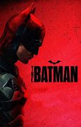
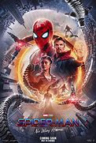
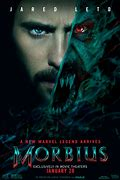

-
The batman
> Cuando Enigma, un sádico asesino en serie, comienza a asesinar a las principales figuras políticas de Gotham, Batman se ve obligado a investigar la corrupción oculta de la ciudad y a cuestionar la participación de su familia.
Read MoreAgregar al CarritoSpider-man
Con la identidad de Spider-Man ahora revelada, Peter recurre al Doctor Strange en busca de ayuda. Algo sale mal y el multiverso se convierte en la mayor amenaza. Ahora Peter debe descubrir qué significa realmente ser Spider-Man.
Read MoreAgregar al CarritoMorbius
El bioquímico Michael Morbius intenta curarse de una rara enfermedad sanguínea pero en su lugar se infecta con un tipo de vampirismo.
Read MoreAgregar al CarritoAnimales Fantasticos
“Animales fantásticos: los secretos de Dumbledore”, de Warner Bros. Pictures, es la nueva aventura del Wizarding World© creado por J.K. Rowling. El profesor Albus Dumbledore (Jude Law) sabe que el poderoso mago oscuro Gellert Grindelwald (Mads Mikkelsen) se moviliza para tomar control del mundo mágico. Incapaz de detenerlo por sí solo, le encomienda al magizoólogo Newt Scamander (Eddie Redmayne) liderar a un intrépido equipo de magos, brujas y hasta un valiente panadero muggle para embarcarse en una peligrosa misión, durante la cual se encuentran con nuevas y conocidas bestias, además de enfrentarse con la creciente legión de seguidores de Grindelwald. Pero con riesgos cada vez mayores, ¿cuánto tiempo más podrá Dumbledore permanecer al margen?
Read MoreAgregar al CarritoSonic
Después de establecerse en Green Hills, Sonic se muere por demostrar que tiene madera de auténtico héroe. La prueba de fuego llega con el retorno del malvado Robotnik, en esta ocasión con un nuevo compinche, Knuckles, en busca de una esmeralda que tiene el poder de destruir civilizaciones. Sonic forma equipo con su propio compañero de fatigas, Tails, y juntos se lanzan a una aventura que les llevará por todo el mundo en busca de la preciada piedra para evitar que caiga en manos equivocadas.